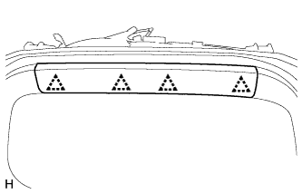
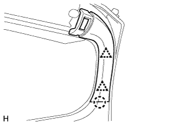
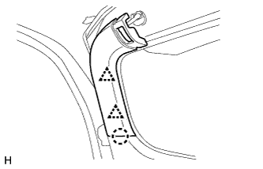
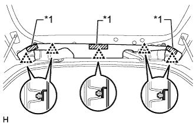
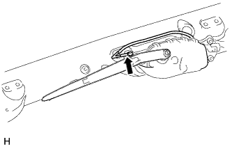
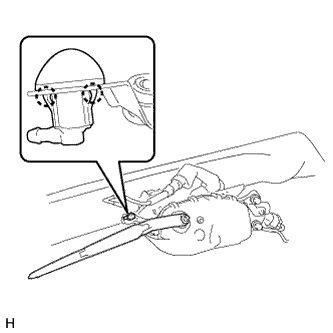

ФОРСУНКА СТЕКЛООМЫВАТЕЛЯ (заднего) > СНЯТИЕ |
| 1. СНИМИТЕ ЦЕНТРАЛЬНУЮ ОБЛИЦОВКУ ДВЕРИ БАГАЖНОГО ОТДЕЛЕНИЯ (для моделей с кронштейном запасного колеса на двери багажного отделения) |
|  |
Освободите 4 фиксатора и снимите центральную облицовку двери багажного отделения.
| 2. СНИМИТЕ ЛЕВУЮ БОКОВУЮ ОБЛИЦОВКУ ДВЕРИ БАГАЖНОГО ОТДЕЛЕНИЯ (для моделей с кронштейном запасного колеса на двери багажного отделения) |
|  |
Освободите 2 фиксатора и захват и снимите боковую облицовку двери багажного отделения.
| 3. СНИМИТЕ ПРАВУЮ БОКОВУЮ ОБЛИЦОВКУ ДВЕРИ БАГАЖНОГО ОТДЕЛЕНИЯ (для моделей с кронштейном запасного колеса на двери багажного отделения) |
|  |
Освободите 2 фиксатора и захват и снимите боковую облицовку двери багажного отделения.
| 4. СНИМИТЕ ПАНЕЛЬ ЗАДНЕГО СПОЙЛЕРА № 1 (для моделей без кронштейна запасного колеса на двери багажного отделения) |
|  |
Отсоедините крепежную ленту и 5 фиксаторов и снимите задний спойлер № 1.
| *1 | Крепежная лента |
| 5. СНИМИТЕ ПРАВУЮ ПАНЕЛЬ ЗАДНЕГО СПОЙЛЕРА |
Отсоедините крепежную ленту и 5 фиксаторов и снимите задний спойлер № 1.
| *1 | Крепежная лента |
| 6. СНИМИТЕ ЗАДНИЙ СПОЙЛЕР В СБОРЕ |
Для моделей без кронштейна запасного колеса на двери багажного отделения:
Снимите задний спойлер в сборе (Нажмите здесь).
Для моделей с кронштейном запасного колеса на двери багажного отделения:
Снимите задний спойлер в сборе (Нажмите здесь).
| 7. СНИМИТЕ ФОРСУНКУ ЗАДНЕГО СТЕКЛООМЫВАТЕЛЯ В СБОРЕ |
|  |
Отсоедините шланг.
|  |
Освободите 2 захвата и снимите форсунку стеклоомывателя.